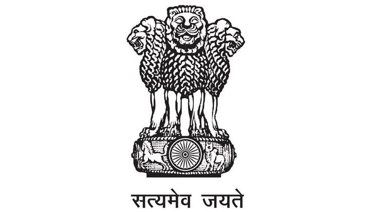

PUBLIC HELP SERVICE
| -Basic Issues include education, basic needs like street-lights related issues. -Health & Hygiene includes the issues regarding drainage,Solid waste pollution,mosquitoes and hospital problems -Electricity Issues include the electricity problems, power cuts and any transformer problems -Water Problems include less water supply,water pollution. -Infrastructure Issues include road, constructions and transport related issues. |
|---|
| Give Feedback -For any queries Contact us ->online.support@indiaonline.in ->customercare@indonline.in -Phone No ->0897 2350143 |
|---|
| Basic Issues |
| Health & Hygiene |
| Electricty Issues |
| Water Problem |
| Infra- Structure Issues |